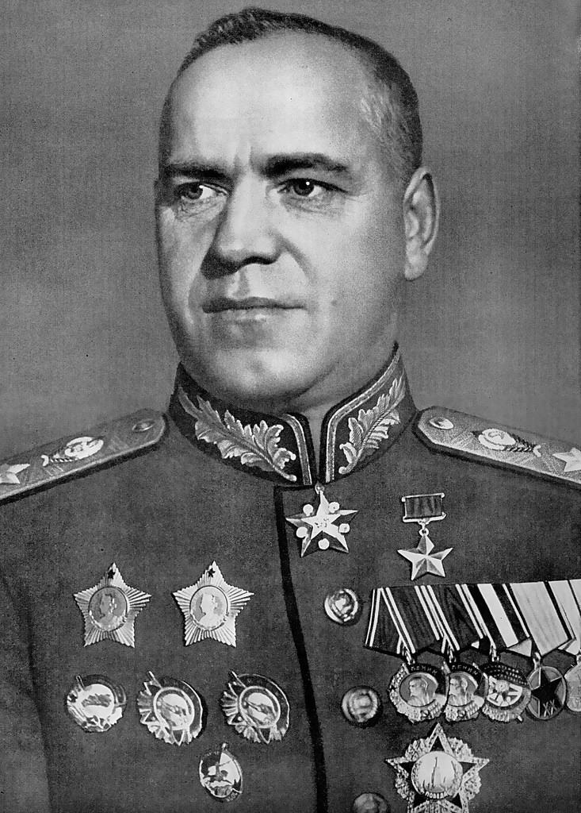
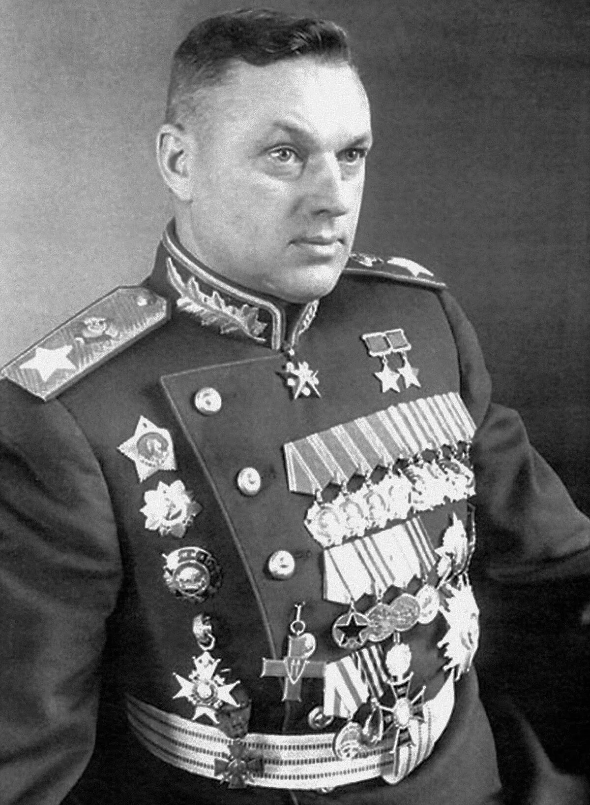
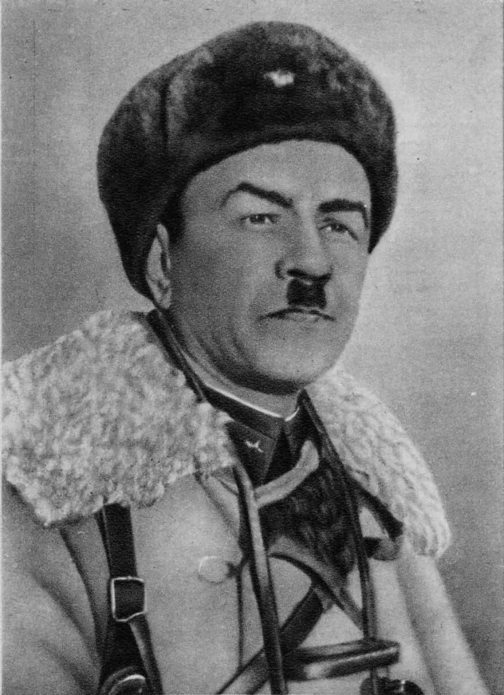
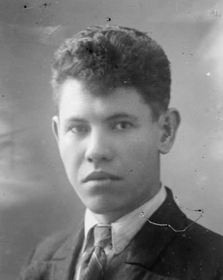

Герои Московской битвы
Нажимайте на фильтры и открывайте личные дела, чтобы увеличить портрет и прочитать полную биографию

Полководец • Западный фронтГеоргий Константинович Жуков
Возглавил оборону Москвы в критический момент октября 1941 года и спланировал декабрьское контрнаступление.

Полководец • 16-я армияКонстантин Константинович Рокоссовский
Командовал 16-й армией на главном направлении удара немецких танков — вдоль Волоколамского шоссе, у Истры и Крюково.

Комдив • 316-я стрелковая дивизияИван Васильевич Панфилов
Создатель легендарной Панфиловской дивизии, разработавший тактику эшелонированной противотанковой обороны.

Герой передовой • Разъезд ДубосековоВасилий Георгиевич Клочков
Возглавил группу истребителей танков в легендарном бою у разъезда Дубосеково 16 ноября 1941 года.
 Авиация ПВО • Ночной таран
Авиация ПВО • Ночной таран
Виктор Васильевич Талалихин
Одним из первых в военной авиации совершил ночной воздушный таран в небе над Подмосковьем, защищая столицу.
 Разведка и партизаны • Петрищево
Разведка и партизаны • Петрищево
Зоя Анатольевна Космодемьянская
18-летняя московская школьница, ушедшая добровольцем в тыл врага и ставшая символом несгибаемой стойкости.